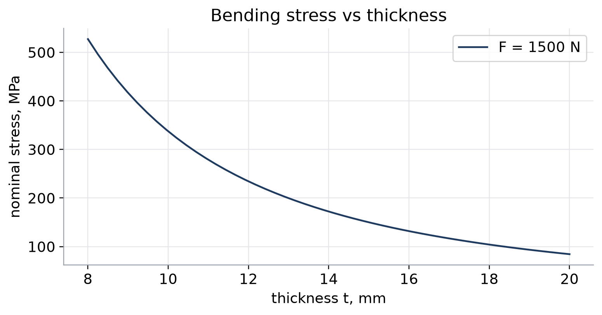
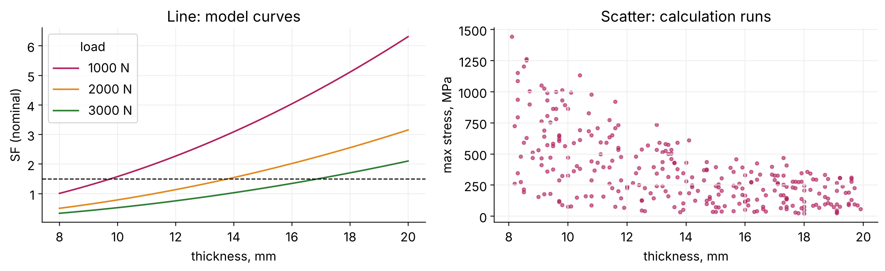
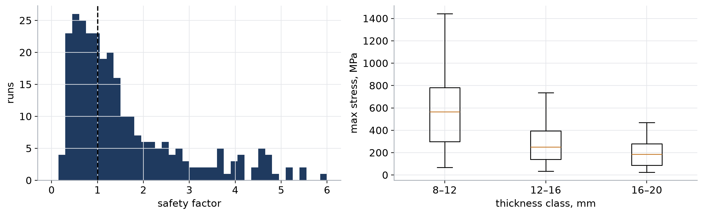
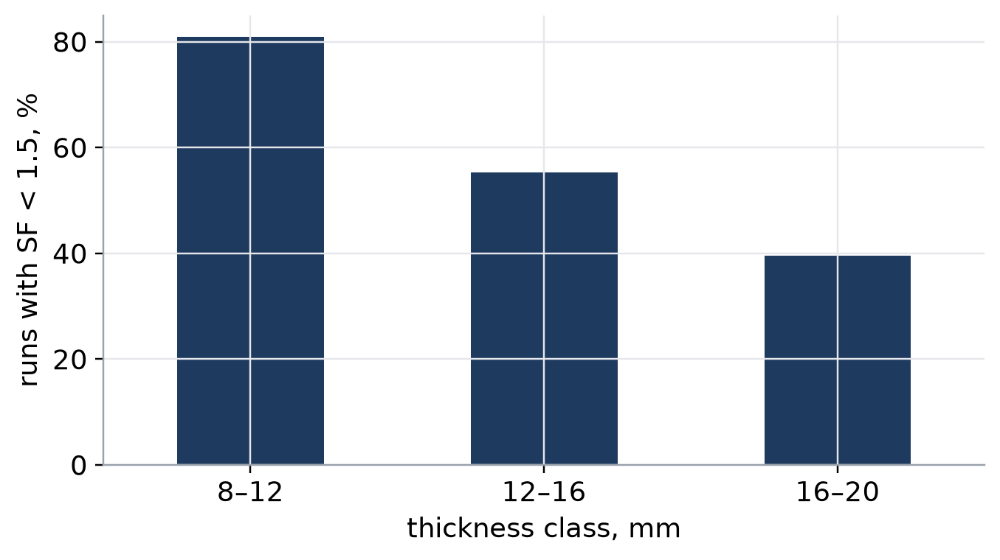
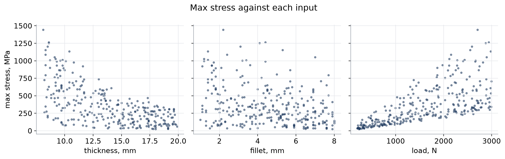
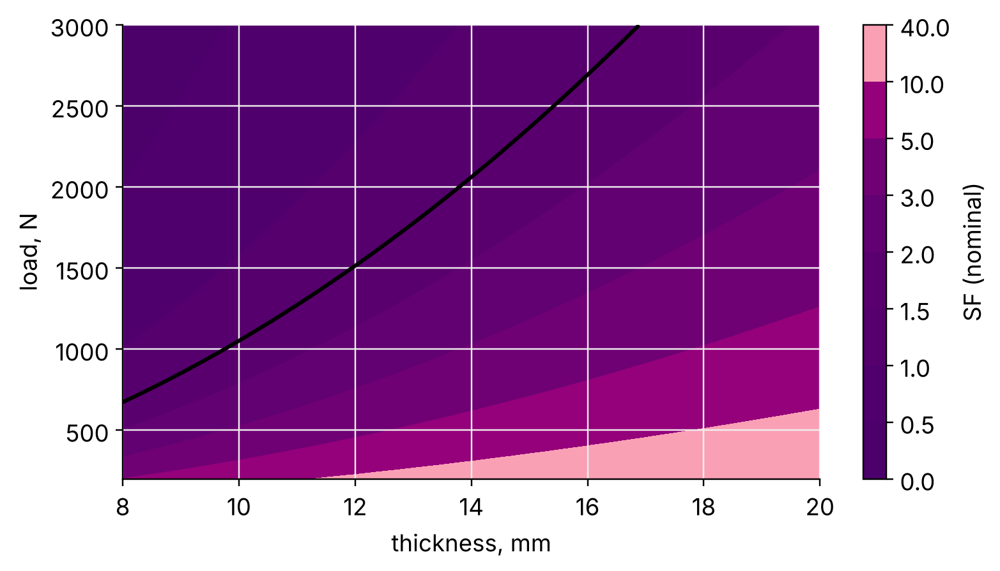
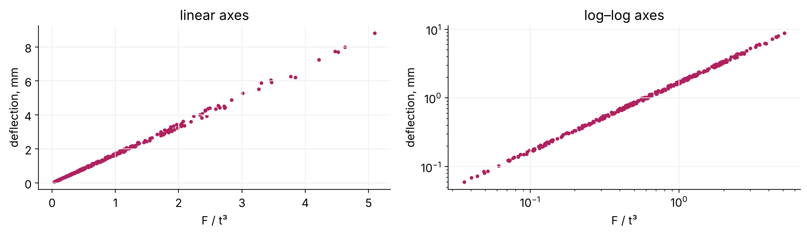
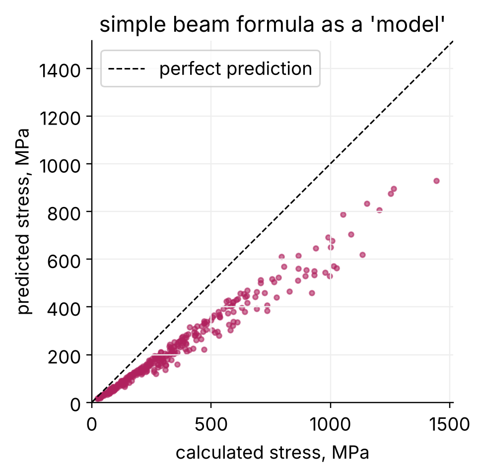

import pandas as pd
import numpy as np
import matplotlib.pyplot as plt
df = pd.read_csv("data/bracket.csv")Session 10 · Topic 2.8 · Thu 21 Jan
fig, ax = plt.subplots(figsize=(8, 3.6)) # figure = canvas, ax = one plot
t = np.linspace(8, 20, 50)
ax.plot(t, 6 * 1500 * 150 / (40 * t ** 2), label="F = 1500 N")
ax.set_xlabel("thickness t, mm")
ax.set_ylabel("nominal stress, MPa")
ax.set_title("Bending stress vs thickness")
ax.legend()
plt.show()
fig, ax = plt.subplots() and call methods on ax — it scales to many plots| Element | Method |
|---|---|
| axis labels with units | ax.set_xlabel("load, N") |
| title | ax.set_title(...) |
| axis range | ax.set_xlim(0, 20), ax.set_ylim(...) |
| log scale | ax.set_xscale("log") |
| legend | label=... in the plot call + ax.legend() |
| reference line | ax.axhline(355, ls="--"), ax.axvline(...) |
| text | ax.annotate("yield", xy=(x, y)) |
| grid | ax.grid(True) |
| Question | Plot |
|---|---|
| how does y change with x (function, curve)? | line |
| is there a relationship between two measured variables? | scatter |
| how are the values of one variable distributed? | histogram |
| how do distributions compare between groups? | box plot |
| how does a summary compare between categories? | bar |
| how does z depend on x and y? | scatter with colour, contour, heatmap |
fig, ax = plt.subplots(1, 2, figsize=(12, 3.8))
for F in [1000, 2000, 3000]:
ax[0].plot(t, 355 / (6 * F * 150 / (40 * t ** 2)), label=f"{F} N")
ax[0].axhline(1.5, color="k", ls="--", lw=1); ax[0].legend(title="load")
ax[0].set(xlabel="thickness, mm", ylabel="SF (nominal)", title="Line: model curves")
ax[1].scatter(df["thickness_mm"], df["max_stress_MPa"], s=10, alpha=.6)
ax[1].set(xlabel="thickness, mm", ylabel="max stress, MPa", title="Scatter: calculation runs")
plt.tight_layout(); plt.show()
df["t_class"] = pd.cut(df["thickness_mm"], [8, 12, 16, 20], labels=["8–12", "12–16", "16–20"],
include_lowest=True)
fig, ax = plt.subplots(1, 2, figsize=(12, 3.8))
ax[0].hist(df["safety_factor"], bins=40, range=(0, 6))
ax[0].axvline(1, color="k", ls="--"); ax[0].set(xlabel="safety factor", ylabel="runs")
groups = [g["max_stress_MPa"] for _, g in df.groupby("t_class", observed=True)]
ax[1].boxplot(groups, tick_labels=["8–12", "12–16", "16–20"])
ax[1].set(xlabel="thickness class, mm", ylabel="max stress, MPa")
plt.tight_layout(); plt.show()
ax = (df.groupby("t_class", observed=True)["safety_factor"]
.apply(lambda s: (s < 1.5).mean() * 100)
.plot.bar(figsize=(7, 3.6), rot=0))
ax.set(xlabel="thickness class, mm", ylabel="runs with SF < 1.5, %")
plt.show()
df.plot.scatter, .plot.hist, .plot.bar, .plot.box — fast for exploringax → finish it with the same methods as beforefig, axes = plt.subplots(1, 3, figsize=(12, 3.8), sharey=True)
for ax, (col, unit) in zip(axes, [("thickness_mm", "mm"), ("fillet_radius_mm", "mm"), ("load_N", "N")]):
ax.scatter(df[col], df["max_stress_MPa"], s=8, alpha=.5)
ax.set_xlabel(f"{col.split('_')[0]}, {unit}")
axes[0].set_ylabel("max stress, MPa")
fig.suptitle("Max stress against each input")
plt.tight_layout(); plt.show()
sharey=True → same scale, so the panels can be compared honestlyT, F = np.meshgrid(np.linspace(8, 20, 100), np.linspace(200, 3000, 100))
SF = 355 / (6 * F * 150 / (40 * T ** 2))
fig, ax = plt.subplots(figsize=(8, 4.2))
cs = ax.contourf(T, F, SF, levels=[0, 0.5, 1, 1.5, 2, 3, 5, 10, 40], cmap="cividis")
ax.contour(T, F, SF, levels=[1.5], colors="k", linewidths=2)
fig.colorbar(cs, label="SF (nominal)"); ax.set(xlabel="thickness, mm", ylabel="load, N")
plt.show()
The black line is the design limit SF = 1.5 — a surrogate model will draw maps like this.
viridis, Blues, GreysPuOr, RdGytab10jet / rainbow: invents boundaries, unreadable in greyscale and for colour-blind readersReports get printed in black and white. Check: does the plot still work in greyscale? Use line styles and markers, not only colour.
fig, ax = plt.subplots(1, 2, figsize=(12, 3.6))
ax[0].scatter(df["load_N"] / df["thickness_mm"] ** 3, df["deflection_mm"], s=8)
ax[0].set(title="linear axes", xlabel="F / t³", ylabel="deflection, mm")
ax[1].scatter(df["load_N"] / df["thickness_mm"] ** 3, df["deflection_mm"], s=8)
ax[1].set(xscale="log", yscale="log", title="log–log axes", xlabel="F / t³", ylabel="deflection, mm")
plt.tight_layout(); plt.show()
nominal = 6 * df["load_N"] * 150 / (40 * df["thickness_mm"] ** 2)
fig, ax = plt.subplots(figsize=(5.2, 4.3))
ax.scatter(df["max_stress_MPa"], nominal, s=10, alpha=.6)
lim = [0, df["max_stress_MPa"].max() * 1.05]
ax.plot(lim, lim, "k--", lw=1, label="perfect prediction")
ax.set(xlim=lim, ylim=lim, xlabel="calculated stress, MPa", ylabel="predicted stress, MPa",
title="simple beam formula as a 'model'"); ax.set_aspect("equal"); ax.legend()
plt.show()
The beam formula alone under-predicts — it misses the weld fillet stress concentration.
sharex, sharey)bbox_inches="tight" cuts empty marginsMake a one-page “data sheet” figure for bracket.csv (2 × 2 subplots, saved as PNG and PDF):
All axes with units; one title for the whole figure. Commit the figure and the code.
From Tuesday 26 Jan: Module 3 — machine learning fundamentals, on the same bracket data.
clean_bracket, validate and your EDA notebook — you will use them in Case 1ML for Engineers · kbrzezinska@kse.org.ua